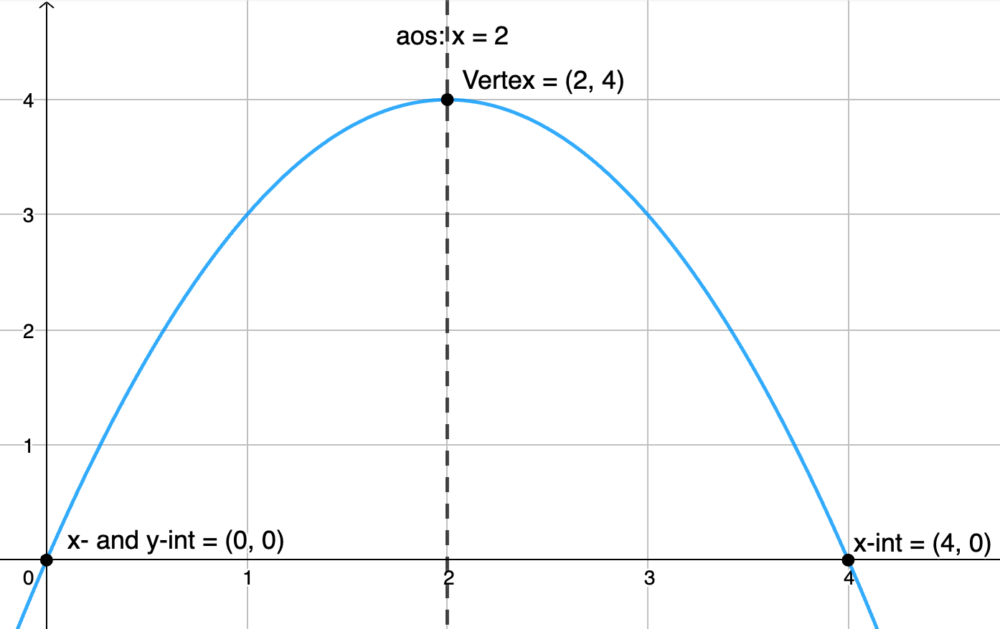
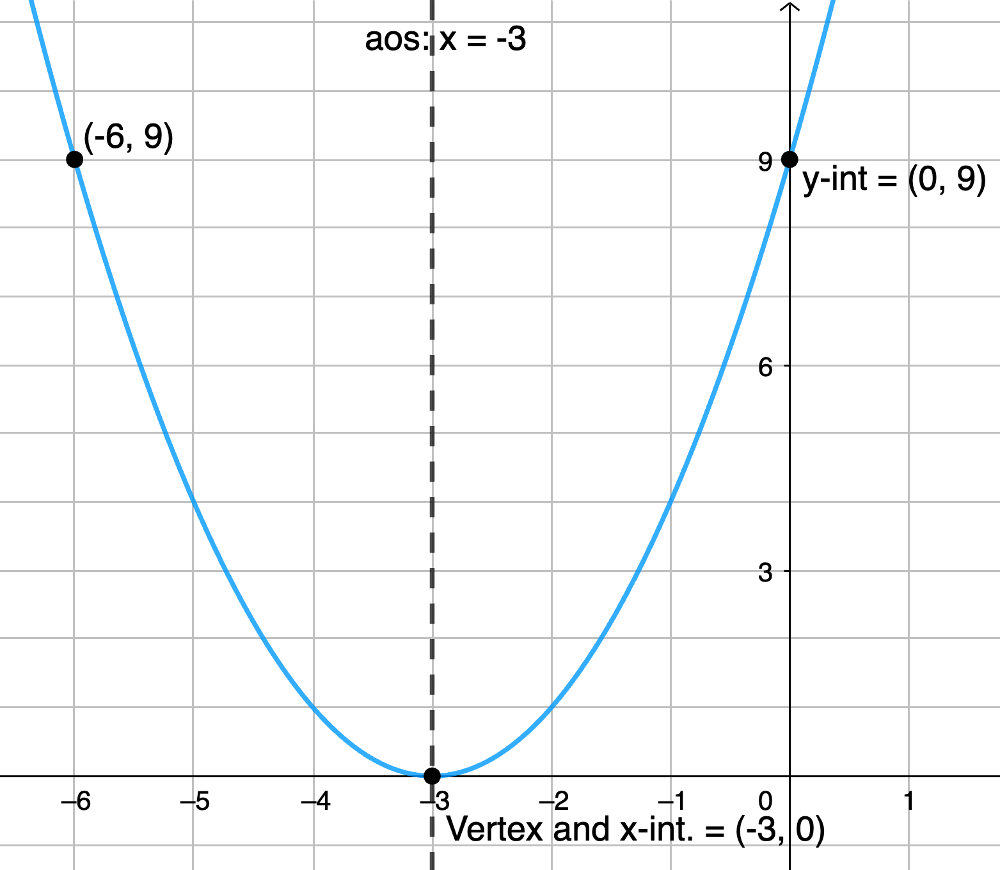
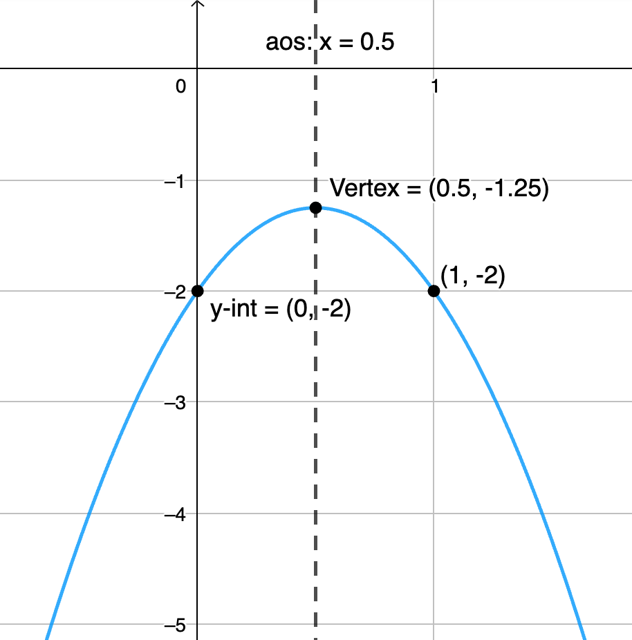
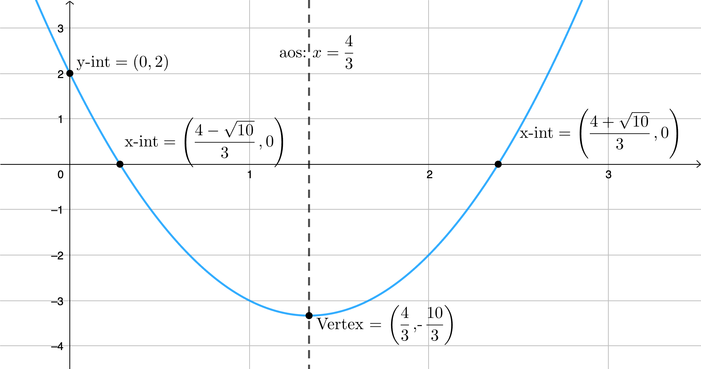
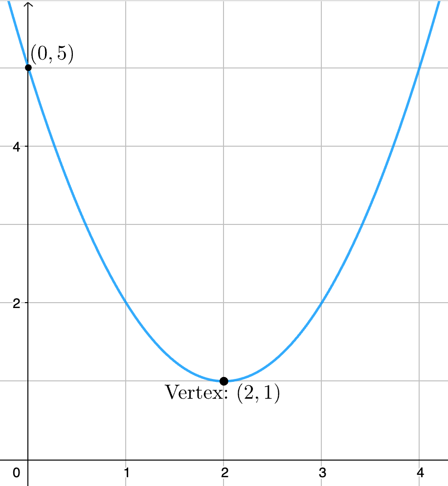
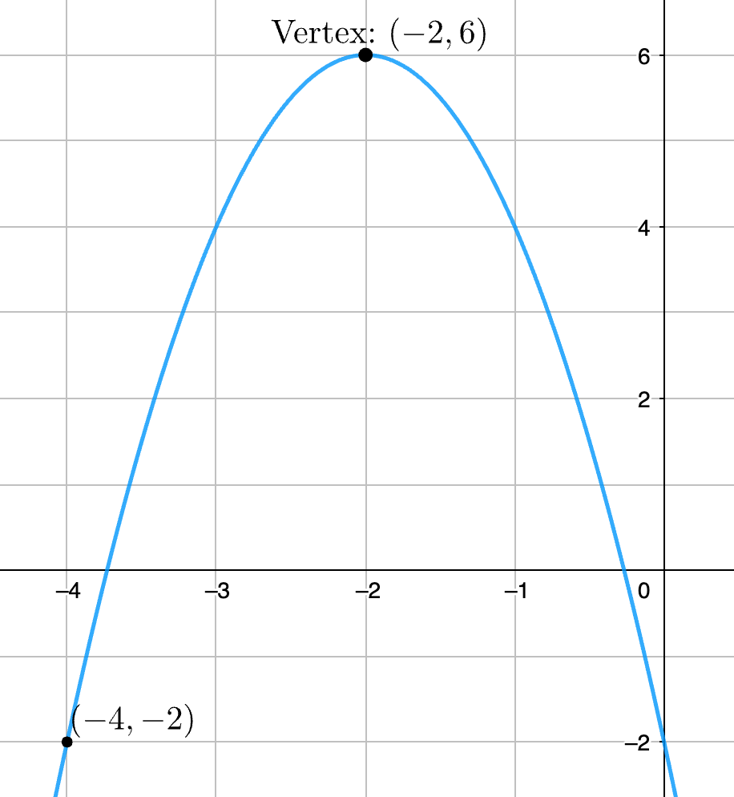
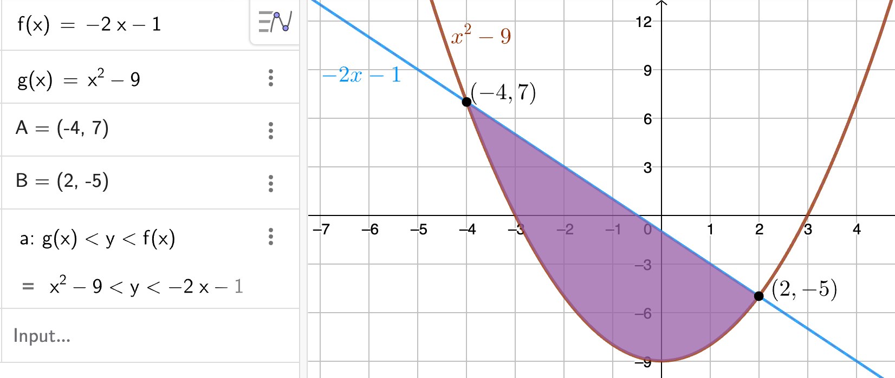
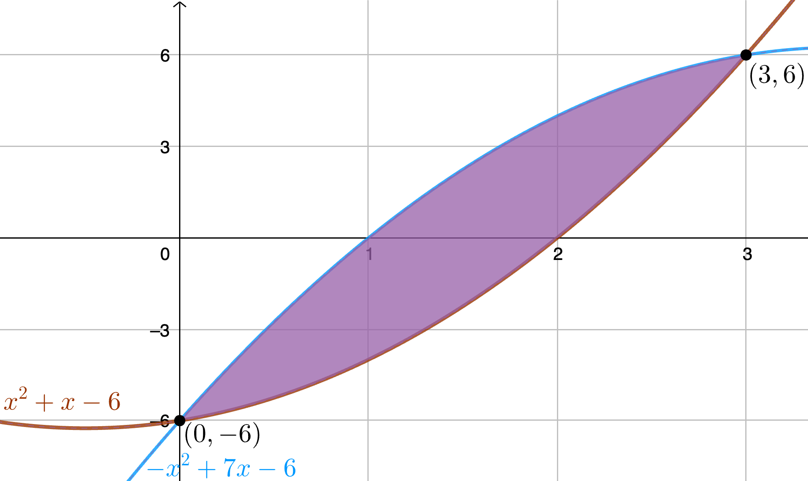
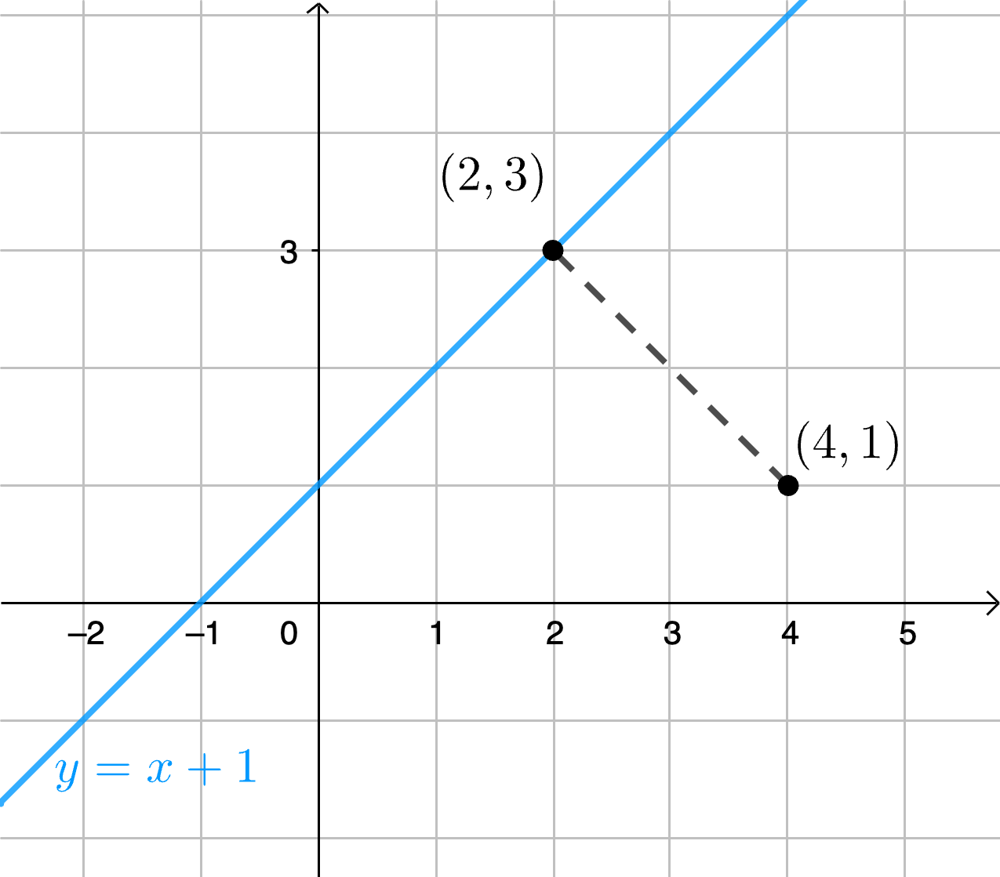

\( \definecolor{red}{RGB}{255,0,0} \definecolor{orange}{RGB}{245, 165, 0} \definecolor{yellow}{RGB}{255,215,0} \definecolor{green}{RGB}{0,255,0} \definecolor{indigo}{RGB}{0,0,255} \definecolor{violet}{RGB}{138,43,226} \definecolor{black}{RGB}{0,0,0} \newcommand{\a}{\alpha} \newcommand{\b}{\beta} \newcommand{\g}{\gamma} \newcommand{\ds}{\displaystyle} \newcommand{\Frac}{\displaystyle \frac} \newcommand{\box}{\boxed} \newcommand{\chec}{\checkmark} \newcommand{\blksq}{\blacksquare} \require{cancel} \)
Notes: These solutions are provided "as-is," for informational purposes only, with no warranty of any kind, expressed or implied, including that of correctness, adequacy, and/or suitability for any purpose, whatsoever. Corrections are welcome and should be emailed to selectedsolutionsdotnet@gmail.com.
Purple font indicates clicking on the text will return you to your prior place; a \(\blksq\) marks the end of a proof.
| Section 1: Linear Functions and Their Properties | ||||||||||
|---|---|---|---|---|---|---|---|---|---|---|
| 1.16 | ||||||||||
| Section 2: Linear Models: Building Linear Functions from Data | ||||||||||
| 2.6 | ||||||||||
| Section 3: Quadratic Functions and Their Properties | ||||||||||
| 3.34 | 3.38 | 3.42 | 3.46 | 3.48 | 3.52 | 3.56 | 3.58 | 3.62 | 3.64 | |
| 3.68 | 3.70 | 3.74 | 3.78 | 3.84 | 3.85 | 3.89 | 3.92 | |||
| Section 4: Building Quadratic Models from Verbal Descriptions and from Data | ||||||||||
| 4.32 | ||||||||||
| Section 5: Inequalities Involving Quadratic Functions | ||||||||||
| 5.10 | 5.14 | 5.18 | 5.22 | 5.24 | 5.28 | 5.32 | ||||
34, 38, 42, 46) State: whether the given function opens up or down; its vertex; its axis of symmetry (aos); its intercepts (state "no \(x\)-intercepts" if that is the case); its domain and range; and the intervals over which it is increasing and decreasing; and use this information to label a graph of the function.
Sln: There are two questions about quadratic functions—all polynomial functions, really—you should never have to think about and should never get wrong: 1) the \(y\)-intercept; and 2) the domain. The \(x\)-coordinate of the \(y\)-intercept is always 0 by definition, and consequently the \(y\)-coordinate is always the constant term (which is zero if it is "missing"). The domain is always "all real numbers" \(=\mathbb{R} = (-\infty,\infty)\); this is because the operations in polynomials—addition, subtraction, multiplication, raising to a non-negative integer power—are well-defined for all real numbers: polynomials don’t try to do things to real numbers that can’t be done to them. (Trying to do certain things to some real numbers—division by zero; taking an even root of a negative number; taking a logarithm of a non-positive number—are the primary things that result in domains other than "all real numbers.")
3.34) \(f(x) = -x^2 + 4x\)
Sln: \(f(x) = ax^2 + bx + c\) with \(a = -1, b = 4, c = 0\); \(a \lt 0 \implies\) the graph \(\box{\text{opens down}}\); \(-\Frac4{2(-1)} = 2 \implies \box{x = 2}\) is the aos and \(f(2) = -(2)^2 + 4(2) = 4 \implies \box{\text{vertex}=(2,4)}\); the \(\box{y\text{-intercept}= (0,0)}\) and since the \(y\)-coordinate of this point is 0, \(\box{\text{it is an }x\text{-intercept}}\) as well, but it is not the only one: \(-x^2 + 4x = -x(x - 4) = 0 \implies x=4\) is another zero of \(f\) so \(\box{(4,0)}\) is the other \(x\)-intercept (remember that a parabola has not more than two \(x\)-intercepts, so if we have found two, we stop looking for more). The \(\box{\text{domain}= \mathbb{R}},\) the \(\box{\text{range is: } f \le 4},\) \(f\) is \(\box{\text{increasing on }x \lt 2)}\) and \(\box{\text{decreasing on } x \gt 2}.~\) Here’s a labeled graph:

3.38) \(f(x) = x^2 + 6x + 9\)
Sln: \(a = 1 \gt 0 \implies \box{\text{opens up}}\); \(c = 9 \implies \box{y\text{-intercept}=(0,9)}\); \(b = 6 \implies -\Frac b{2a} = -\Frac6{2(1)} = -3 \implies\) \(\box{\text{aos: } x = -3}\); \((-3)^2 + 6(-3) + 9 = 0 \implies \box{\text{vertex}=(-3,0)}\); \(x^2 + 6x + 9 = (x+3)^2 = 0 \implies \box{x\text{-int.}=(-3,0)}\) as well (and this is the only \(x\)-intercept); \(\box{\text{dom.} = \mathbb{R}, \text{ ran.: } f \ge 0, \text{ incr.: } x \gt -3, \text{ decr.: }x \lt -3.}~\) Here’s a labeled graph:

3.42) \(f(x) = -3x^2 + 3x - 2\)
Sln: \(a = -3 \lt 0 \implies \box{\text{opens down}}\); \(c = -2 \implies \box{y\text{-int.}=(0,-2)}\); \(b = 3 \implies -\Frac b{2a} = -\Frac3{2(-3)} = \Frac12 \implies \box{\text{aos: }x=\frac12}\); \(-3\left(\Frac12\right)^2 + 3\left(\Frac12\right) - 2 = -\Frac34 + \Frac32 - 2 = -\Frac54 \implies \box{\text{vert.}=\left(\frac12,-\frac54\right)}\); down opening and a vertex below the \(x\)-axis \(\implies \box{\text{no }x\text{-intercepts}}\) (check: \(b^2 - 4ac = 9 - 4(-3)(-2) = -15 \lt 0~\chec\)); \(\box{\text{dom.} = \mathbb{R}, \text{ ran.: } f \le -\frac54, \text{ incr.: } x \lt \frac12, \text{ decr.: } x \gt \frac12.}~\) Here’s a labeled graph:

3.46) \(f(x) = 3x^2 - 8x + 2\)
Sln: \(a = 3 \gt 0 \implies \box{\text{up opening}}\); \(c = 2 \implies \box{y\text{-int.}=(0,2)}\); \(b = -8 \implies -\Frac b{2a} = -\Frac{-8}{2(3)} = \Frac43 \implies \box{\text{aos: }x = \frac43}\); \(3\left(\Frac43\right)^2 - 8\left(\Frac43\right) + 2 = -\Frac{10}3 \implies \box{\text{vert.}=\left(\frac43,-\frac{10}3\right)}\); \(0 = 3x^2 - 8x + 2 \implies x = \Frac{-(-8) \pm \sqrt{(-8)^2 - 4(3)(2)}}{2(3)} =\) \(\Frac{8 \pm 2\sqrt{10}}{6} = \Frac{4 \pm \sqrt{10}}{3}\) \(\implies \box{x\text{-int} = \left(\frac{4 \pm \sqrt{10}}3, 0\right)}\); \(\box{\text{dom.}=\mathbb{R},\text{ ran.: } f \ge -\frac{10}3, \text{ incr.: }x \gt \frac43, \text{ decr.: }x \lt \frac43.\!\!\!}\)
Here’s a labeled graph:

48, 52) Determine the quadratic function whose graph is given.
3.48)

Sln: Given that the vertex is \((2,1)\), the vertex form of the quadratic is \(f(x) = a(x-2)^2 + 1\) for some real number \(a\); the additional requirement that \((0, f(0)) = (0, 5)\) enables us to determine \(a\) as follows: we must have that \(5 = a(0-2)^2 + 1 = a(4) + 1 \implies 4 = 4a\) \(\implies a = 1\); thus \(\box{f(x) = (x-2)^2 + 1 = x^2 - 4x + 5.\!\!}\) Check: the graph also appears to pass through \((4,5)\) (and by symmetry around \(x = 2\) it must) so we check that \(5 = f(4) = 4^2 - 4(4) + 5 = 5~\chec\)
3.52)

Sln: We require that \(f(x) = a(x - (-2))^2 + 6 = a(x+2)^2 + 6\) such that \(f(-4) = -2 = a(-4 + 2)^2 + 6 = 4a + 6 \implies 4a = -8 \implies a = -2\) \(\implies \box{f(x) = -2(x+2)^2 + 6 = -2x^2 - 8x - 2.\!\!\!}\) Check: symmetry around \(x = -2\) requires that \(f(0) = -2 = -2(0)^2 - 8(0) - 2 = -2~\chec\)
56, 58) Without graphing, state whether the given function has a maximum or a minimum value and then find that value.
3.56) \(f(x) = 4x^2 - 8x + 3\)
Sln: The coefficient of the \(x^2\) term, \(4 \gt 0 \implies\) the graph opens up, so its vertex is at the \(\box{\text{minimum}}\) of the function; to find that minimum value, we need to determine the \(x\) value where it occurs, which is \(-\Frac b{2a} = -\Frac{-8}{2(4)} = 1\), and then evaluate \(f\) there: \(f(1) = 4(1)^2 - 8(1) + 3 = 4 - 8 + 3 = \box{-1}.\)
3.58) \(f(x) = -2x^2 + 8x + 3\)
Sln: \(-2 \lt 0 \implies\) the graph opens down so the function has a \(\box{\text{maximum}},\) the \(x\)-coordinate of which is \(x = -\Frac{8}{2(-2)} = 2\) and \(f(2) = -2(2)^2 + 8(2) + 3 = \box{11}.\)
3.62) The graph of \(f(x) = ax^2 + bx + c\) has vertex at \((1, 4)\) and passes through the point \((-1, -8)\): find \(a, b,\) and \(c.\)
Sln: Vertex at \((1, 4) \implies f(x) = a(x-1)^2 + 4\) for some \(a,\) and passes through \((-1,-8) \implies -8 = a(-1-1)^2 + 4 = 4a + 4 \implies 4a = -12\) \(\implies \box{a = -3} \implies f(x) = -3(x-1)^2 + 4 = -3x^2 + 6x + 1 \implies \box{b = 6, c = 1.\!}\)
Check: \(f(-1) = -3(-1)^2 + 6(-1) + 1 = -8~\chec, -\Frac6{2(-3)} = 1, f(1) = -3(1)^2 + 6(1) + 1 = 4~\chec\)
64, 68) Given each pair of functions, \(f(x)\) and \(g(x)\): b) Solve \(f(x) = g(x)\); a and c) graph \(f,g\) on the same set of axes and use the result of Part b to label the points of intersection; d) shade the region \(f(x) \gt g(x).\)
3.64) \(f(x) = -2x - 1;~g(x) = x^2 - 9\)
Sln: b) \(f(x) = g(x) \implies -2x - 1 = x^2 - 9 \implies x^2 + 2x - 8 = 0 = (x - 2)(x + 4) \implies x = -4, 2; f(-4) = -2(-4) - 1 = 7,\) \(f(2) = -2(2) - 1 = -5\) so the points of intersection are \(\box{(-4, 7), (2, -5).}\) Check: \((-4)^2 - 9 = 7~\chec,~ (2)^2 - 9 = -5~\chec\)
a, c, d) Here’s the required graph, including the command, g(x) < y < f(x), needed to shade the required region:

3.68) \(f(x) = -x^2 + 7x - 6;~g(x) = x^2 + x - 6\)
Sln: b) \(f(x) = g(x) \implies -x^2 + 7x - 6 = x^2 + x - 6 \implies 2x^2 - 6x = 0 \implies 2x(x-3) = 0 \implies x = 0, 3; f(0) = -6, f(3) = -9 + 21 - 6 = 6 \implies \) the points of intersection are \(\box{(0,-6), (3,6).}~\) Check: \(g(0) = -6~\chec, g(3) = 9 + 3 - 6 = 6~\chec\)
a, c, d) Here’s the required graph:

3.70) a) Find a quadratic function whose \(x\)-intercepts are \(-5\) and \(3\) with \(a=1; 2; -2;\) and \(5\); how does the value of \(a\) affect: b) the intercepts; c) the axis of symmetry; d) the vertex? e) Compare the \(x\)-coordinate of the vertex with the midpoint of the \(x\)-intercepts: what might you conclude?
Sln: a) By definition, the \(x\)-intercepts of the graph of any relation (not just functions) are those points where the \(y\)-coordinate is zero; so being told that the \(x\)-intercepts are \(-5\) and \(3\), we know that \(a(-5)^2 + b(-5) + c = 0\) and \(a(3)^2 + b(3) + c = 0.~\) For \(a = 1\) this gives the simultaneous linear equations \(25 - 5b + c = 0\) and \(9 + 3b + c = 0 \implies\) (eliminating \(c\)) \(5b - 25 = -3b - 9\) \(\implies 8b = 16\) \(\implies b = 2\) \(\implies c = -15\) for a result of \(\box{f(x) = x^2 + 2x - 15}\) for \(a=1.~\) Similarly, \(a = 2 \implies\) \(2(-5)^2 + b(-5) + c = 0 = 2(3)^2 + b(3) + c\) \(\implies 8b = 32\) \(\implies b = 4\) \(\implies c = -30\) \(\implies \box{f(x) = 2x^2 + 4x - 30}\); \(a = -2 \implies\) \(-2(-5)^2 + b(-5) + c = 0 = -2(3)^2 + b(3) + c\) \(\implies 8b = -32\) \(\implies b = -4\) \(\implies c = 30\) \(\implies \box{f(x) = -2x^2 - 4x + 30}\); and \(a = 5 \implies\) \(5(-5)^2 + b(-5) + c = 0 = 5(3)^2 + b(3) + c\) \(\implies 8b = 80\) \(\implies b = 10\) \(\implies c = -75\) \(\implies \box{f(x) = 5x^2 + 10x - 75}.~\) (It should be clear from the answers that they "check" for the required values of \(a\); the check that each of them has the required \(x\)-intercepts is left to the reader.)
b) It doesn’t: the value of \(a\) is completely independent of the \(x\)-intercepts—given any pair of \(x\)-intercepts (which, in general, may be equal to one another), one may choose any value of \(a\) without affecting those intercepts (it affects every other point on the graph, but not the \(x\)-intercepts).
c) \(a = 1 \implies x = -\Frac b{2a} = -\Frac2{2(1)} = -1\); \(a = 2 \implies x = -\Frac{4}{2(2)} = -1\); \(a = -2 \implies x = -\Frac{-4}{2(-2)} = -1\); \(a = 5 \implies x = -\Frac{10}{2(5)} = -1\): it certainly appears as if the value of \(a\) also doesn’t affect the axis of symmetry.
d) \(-\Frac b{2a}\) is also the \(x\)-coordinate of the vertex, so that is also \(-1\) for all four of these parabolas; however, the value of \(f(-1)\) is different for each of them: \(a=1: f(-1) = (-1)^2 + 2(-1) - 15 = -16\) \(\implies \box{\text{vertex}=(-1,-16)}\); \(a=2: f(-1) = 2(-1)^2 + 4(-1) - 30 = -32\) \(\implies \box{\text{vertex}=(-1,-32)}\); \(a=-2: f(-1) = -2(-1)^2 - 4(-1) + 30 = 32\) \(\implies \box{\text{vertex}=(-1,32)}\); and, based on the pattern, we predict that for \(a=5, f(-1) = 5(-16) = -80 = 5(-1)^2 + 10(-1) - 75~\chec\) so \(\box{\text{vertex}=(-1,-80)}.\) (In other words, this suggests that if \((x,y)\) is the vertex for \(a=1\), then if another parabola has the same \(x\)-intercepts but leading coefficient \(a \ne 1\), then its vertex will be at \((x, ay).\))
e) The \(x\)-coordinate of the midpoint of the \(x\)-intercepts is their arithmetic average, i.e., one-half their sum: \(\Frac12(-5 + 3) = -1\) which is also the \(x\)-coordinate of the vertex, which is also the value of \(x\) for the axis of symmetry...but is this always true? Let’s see: if the graph has \(x\)-intercepts, they are where \(f(x) = ax^2 + bx + c = 0 \implies x = \Frac{-b + \sqrt{b^2-4ac}}{2a}\) is the \(x\)-coordinate of one of them and \(x = \Frac{-b - \sqrt{b^2-4ac}}{2a}\) is the \(x\)-coordinate of the other; adding these together and multiplying by \(\Frac12\) gives: \[\frac12\frac{-b + \cancel{\sqrt{b^2-4ac}} + (-b - \cancel{\sqrt{b^2-4ac}})}{2a} = \frac{-2b}{4a} = -\frac b{2a}\]
exactly the value of the \(x\)-coordinate of the vertex and the value \(x\) equals for the axis of symmetry: the \(x\)-coordinate of the vertex \(=\) the value of \(x\) for the axis of symmetry, is half the sum of the zeros of the quadratic (this is true even if the zeros are complex: in that case, the parabola has no \(x\)-intercepts, but it still has an axis of symmetry and a vertex, and the former and the \(x\)-coordinate of the latter are still given by the average of the (complex) zeros). So, if you’re given the zeros of a quadratic—be it explicitly, as in this problem; graphically; or implicitly, e.g., because the quadratic is given in factored form, \(f(x) = a(x - r)(x - s) \implies r\) and \(s\) are the zeros—you can use this fact to quickly determine the axis of symmetry and \(x\)-coordinate of the vertex without first having to obtain \(b\); and once you’ve determined the \(x\)‑coordinate this way, you can plug that into the factored form to get the \(y\)-coordinate of the vertex, from which you can immediately write down the vertex form of the quadratic, which is equivalent to completing its square, without ever having to go through the \(f(x) = ax^2 + bx +c\) form of the equation. Let me repeat that: you never really have to complete the square the hard way, you can always find the vertex from the zeros, write the vertex form of the quadratic, and that is the completed the square form of the quadratic.
3.74) What point on the line \(y = x + 1\) is closest to the point \((4,1)\)?
Sln: The distance \(d\) between the point \((x, y)\) and \((4,1)\) is given by \(d = \sqrt{(x-4)^2 + (y-1)^2}\); for points on the given line, \(y = x + 1\) so, substituting, we get \(d(x) = \sqrt{(x-4)^2 + ((x+1) - 1)^2} = \sqrt{2x^2 - 8x + 16}.\) With the knowledge we have so far, solution of this problem relies on the fact, implied in the hint for Problem 73, that this \(d(x)\) has a minimum where \([d(x)]^2 = 2x^2 - 8x + 16\) has its minimum (in Calculus one learns how to prove this claim, but for now you have to "take it on faith.") \(2x^2 - 8x + 16\) has its minimum at \(x = -\Frac{-8}{2(2)} = 2\), and at \(x = 2, y = 2 + 1 = 3\), so \(\box{(2,3)}\) is the point on the line closest to \((4,1).\) Here’s a graph of the line, the two points, and the segment connecting them:

Imagine moving the segment endpoint on the line farther along the line in either direction—try to reason out, geometrically, why any other point on the line is farther away from \((4,1).\)
3.78) The marginal cost \(C\) (in dollars; see Problem 77 in the text for the definition, which we don’t need in order to answer these questions) of manufacturing \(x\) cell phones (in thousands) is given by \[C(x) = 5x^2 - 200x + 4000.\]
How many cell phones should be manufactured to minimize the marginal cost, and what is the resulting minimal \(C\)?
Sln: \(C\) is a quadratic function of \(x\) and \(a = 5 \gt 0 \implies\) its graph opens up which means its vertex is a minimum; \(x = -\Frac b{2a} = -\Frac{-200}{2(5)} = 20\) is the \(x\)-coordinate of that minimum, corresponding to \(\box{20,000\text{ phones manufactured}}\) to minimize the marginal cost (remember that the unit for \(x\) is thousands), and that minimal marginal cost is \(C(20) = 5(20)^2 - 200(20) + 4000 = \box{\$2000},\) i.e., an additional $2000 of manufacturing cost to add or subtract manufacturing 1000 phones, i.e., $2 per phone.
3.84) Find a quadratic function whose \(x\)-intercepts are and \(-1\) and \(5\) and whose range is \((-\infty, 9]\).
Sln: By the result of Problem 70e, we know that the \(x\)-coordinate of the vertex of this function must be \(x = \Frac{-1 + 5}2 = 2\); the range being \((-\infty, 9]\) tells us that \(y=9\) is the \(y\)-coordinate of the vertex; therefore, \(f(x) = a(x-2)^2 + 9\) for some real number \(a\); for \(5\) to be an \(x\)-intercept, we must have \(f(5) = 0 = a(5-2)^2 + 9 = 9a + 9 \implies a = -1\) so \(\box{f(x) = -(x-2)^2 + 9 = -x^2 + 4x + 5.\!\!\!\!}~\) Check: \(f(-1) = -(-1)^2 + 4(-1) + 5 = 0~\chec; -\Frac4{-2} = 2, f(2) = -(2)^2 + 4(2) + 5 = 9~\chec\)
3.85) Let \(f(x) = ax^2 + bx + c\) where \(a,b,c\) are odd integers; show that if \(x\) is an odd integer then \(f(x)\) must be an odd integer.
Pf: When proving something, it is best to make as few assumptions as possible and to cite and start from definitions as much as possible; thus I scoured the text for its definitions of "odd" and "even" integers, but, to my surprise, I found no such definitions! Evidently, the text expects you to know from prior experience that the odd integers are \(\{\pm1, \pm3, \pm5, ...\}\) and the evens are \(\{0, \pm2, \pm4, \pm6, ...\}\); but these mere listings of them don’t help us very much in the present context. Thus we define an integer \(n\) to be "odd" if and only if there exists an integer \(m\) such that \(n = 2m + 1,\) and an integer \(p\) to be "even" if and only if there exists an integer \(q\) such that \(p = 2q.\) (Exercises for the ambitious: 1) prove our definitions from the listing definitions; 2) starting with our definition of odd, define even to be "not odd" and prove that if \(p\) is even, then there exists an integer \(q\) such that \(p = 2q\); and 3) starting with our definition of even, define odd to be "not even" and prove that if \(n\) is odd, then there exists an integer \(m\) such that \(n = 2m + 1.\))
From our definitions, it is "straightforward" (i.e., it is left to the reader) to prove: 1) an odd integer plus an odd integer is even; 2) an odd integer plus and even integer is odd; and 3) an odd integer times an odd integer is odd (hints: an integer plus an integer is an integer, an integer times an integer is an integer, and an even integer times an even integer is an even integer). Thus if \(a, b, c, x\) are all odd integers: \(x^2 = (x)(x) = (\text{odd})(\text{odd}) = \text{odd} \implies ax^2 = (\text{odd})(\text{odd}) = \text{odd}\); \(bx = (\text{odd})(\text{odd}) = \text{odd} \implies ax^2 + bx = \text{odd} + \text{odd} = \text{even}\implies\) \((ax^2 + bx) + c = \text{even} + \text{odd} = \text{odd}.~~\blksq\)
3.89) Under what circumstances does the graph of \(f(x) = ax^2 + bx + c\) have no \(x\)-intercepts?
Sln: Having no \(x\)-intercepts means there are no real numbers \(x\) such that \(y = f(x) = ax^2 + bx + c = 0.\) Technically, we must consider two cases: \(a=0\) and \(a \ne 0.\) If \(a = 0,\) the graph of \(f\) is a line, which has no \(x\)-intercepts if and only if that line is parallel to, but not coincident with, the \(x\)-axis, i.e., the line \(y = 0\); parallel to \(y = 0 \implies b = 0,\) while not coincident with \(y = 0 \implies c \ne 0\); that completes consideration of the \(a=0\) case.
If \(a \ne 0, ax^2 + bx + c \ne 0\) for all real \(x\) if and only if the discriminant \(b^2 - 4ac \lt 0.\) (Geometrically, this corresponds to up-opening parabolas whose vertex is above the \(x\)-axis, and down-opening parabolas whose vertex is below the \(x\)-axis.)
Summarizing, the required circumstances are: \(a = 0\) requires \(b = 0, c \ne 0\); and \(a \ne 0\) requires \(b^2 - 4ac \lt 0.\)
3.92) What are the possibilities for the number of times the graphs of two different quadratic functions (with real coefficients) intersect?
Sln: Given two quadratic functions, \(f(x) = Ax^2 + Bx + C,~g(x) = ax^2 + bx + c,\) with real coefficients, their graphs intersect where \(f(x) = g(x) \implies Ax^2 + Bx + C = ax^2 + bx + c \implies (A-a)x^2 + (B-b)x + (C-c) = 0.~\) If \(A = a\), this \(\implies (B-b)x + (C-c) = 0\); if also \(B=b\) then, since it is stipulated that the functions are different, \(C \ne c \implies C-c \ne 0 \implies\) \(\box{\text{no points of intersection}}\) in the case \(A = a, B = b, C \ne c.~\) Continuing with the case \(A = a,\) if \(B \ne b\) then, regardless of whether or not \(C = c,\) \(x = -\Frac{C-c}{B-b}\) is well-defined and unique, implying \(\box{\text{one point of intersection}}\) in this case of \(A = a, B \ne b.~\) If \(A \ne a\), then, letting \(\a = A-a, \b = B-b, \g = C-c,\) the quadratic \((A-a)x^2 + (B-b)x + (C-c) = \a x^2 + \b x + \g\) has zero, one, or two real solutions depending on whether \(\b^2 - 4\a\g\) is less than, equal to, or greater than zero, respectively. Thus the possibilities are \(\box{\text{zero, one, or two}}\) points of intersection, with two different ways each in which the result might be zero or one point of intersection. (The reader is "strongly encourged" to figure out the geometry of each of the cases above; for example, the case \(A = a, B = b, C \ne c\) corresponds to two otherwise-identical parabolas, vertically displaced relative to one another: they do not intersect precisely because they "start off" from different vertical positions at the same \(x\)-coordinate, but are otherwise identical and thus always remain the same vertical distance from one another; the reader should similarly figure out the geometry of the cases \(A=a, B \ne b;\) \(A \ne a, \b^2 - 4\a\g \lt; =; \gt 0.\))
10, 14, 18, 22) Solve the given inequality.
5.10) \(x^2 + 8x \gt 0\)
Sln:
5.14) \(x^2 + 7x \lt -12\)
Sln:
5.18) \(x^2 + 2x + 4 \gt 0\)
Sln:
5.22) \(2(2x^2 - 3x) \gt -9\)
Sln:
5.24) What is the domain of \(f(x) = \sqrt{x - 3x^2}\)?
Sln:
28, 32) For the given \(f \& g,\) solve d) \(f(x) \gt 0\); e) \(g(x) \le 0\); f) \(f(x) \gt g(x)\); g) \(f(x) \ge 1.\)
5.28) \(f(x) = -x^2 + 4,~g(x) = -x - 2\)
Sln:
5.32) \(f(x) = -x^2 - x + 1,~g(x) = -x^2 + x + 6\)
Sln:
5.36)
Sln:
5.40)
Sln:
5.42)
Sln:
Graphs generated using GeoGebra.
| Venmo: @David-Goldsmith-13 |